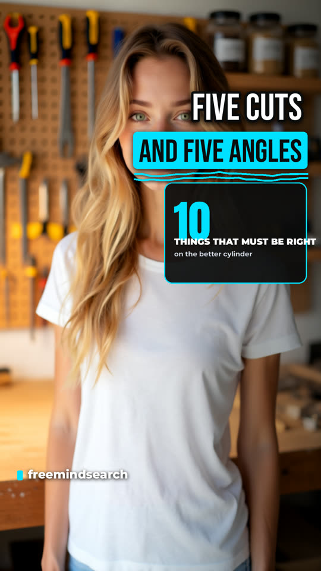

Story
Your Key Has Five Cuts. A Better Lock Wants Five Angles Too
Five small cuts along the edge of your front door key are the only reason it opens your lock and nobody else's. This is what those cuts do to the pins inside the cylinder, and the single line everything has to land on before anything can turn. Then the same cylinder again, built so height alone is not enough: the cuts are angled, every pin has to turn as well as rise, and a sidebar reads all five angles at once.
Watch on FacebookWatch on InstagramWatch on TikTokWatch on YouTube
So, would you pay more for a lock like that one?
Sources
- Lockwiki, Pin-tumbler: https://lockwiki.com/index.php/Pin-tumbler
- Lockwiki, Differs: https://lockwiki.com/index.php/Differs
- Lockwiki, Medeco Original: https://lockwiki.com/index.php/Medeco_Original
- Lockwiki, Medeco Biaxial: https://lockwiki.com/index.php/Medeco_Biaxial
Made with AI: the presenter, voice and visuals are AI-generated. Every story is researched and fact-checked by a person, with its sources listed.